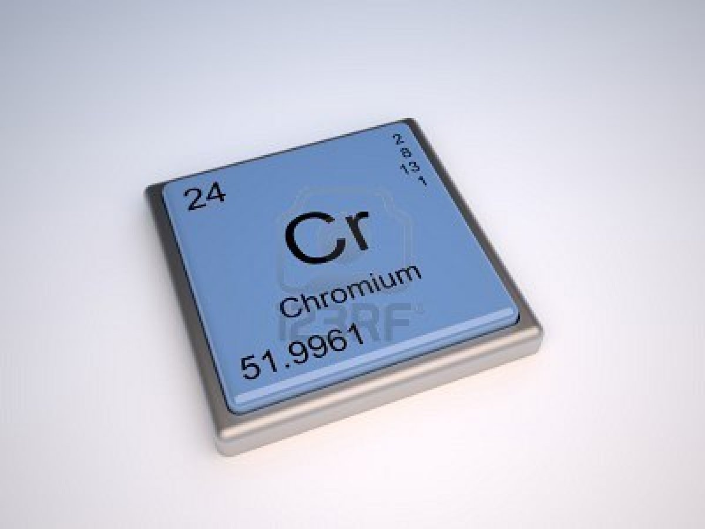

CROMO:

El cromo es un elemento químico de número atómico 24 que se encuentra en el grupo 6 de la tabla periódica de los elementos. Su símbolo es Cr. Es un metal que se emplea especialmente en metalurgia. Su nombre "cromo" (derivado del griego chroma, "color") se debe a los distintos colores que presentan sus compuestos.
 Ir a página principal
Ir a página principal